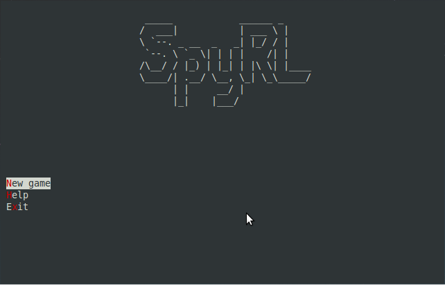
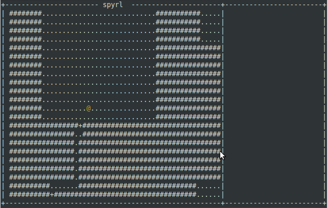

Benny Hallett
thoughts on software engineering
7DRL 2014 Postmortem
The 7 day roguelike challenge has been and gone for this year, and my participation in it can be summed up in a few words:
Not enough time.
More specifically, I didn’t have the time available to dedicate to it. I thought the commute time would be enough, but between working, travelling and spending time with my family, there wasn’t much time left for building a roguelike.
It wasn’t a complete failure though, the game progressed a fair way, and I learned a lot in the process.

SpyRL features
The features that were completed in SpyRL include
- Title screen
- Help screen
- Main game screen
- System for displaying messages to the user
- Move around the world
- Open and close doors
- Search containers
- Take items from containers
- Drop what you’re currently carrying
- Attack an enemy in melee combat
- Lose health
- Enemies move randomly
- Enemies attack anyone who moves adjacent to them

There are a bunch of things missing, such as win and lose states, and traps, that I will add into the game in the future.
What I learned
- The delve library is missing 2 key features, FoV and Pathing
- Other than above, delve is quite usable. The component system works surprisingly well
- My rendering code needs some work. The game gets slower at larger console sizes
- SpyRL could turn out to be a fun game, I should finish it.
- Next year I could plan to take some time off to work on the game.
I won’t be releasing either Delve or Spyrl to Rubygems just yet. Spyrl isn’t either winnable or losable at the moment, and delve probably needs a FoV feature as well as an A* implementation before it’s ready to be used in the wild.